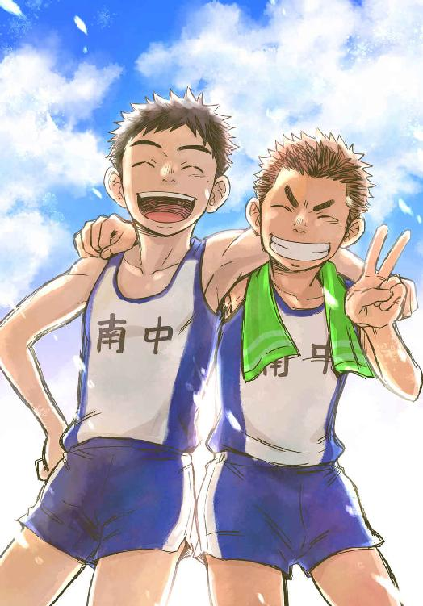
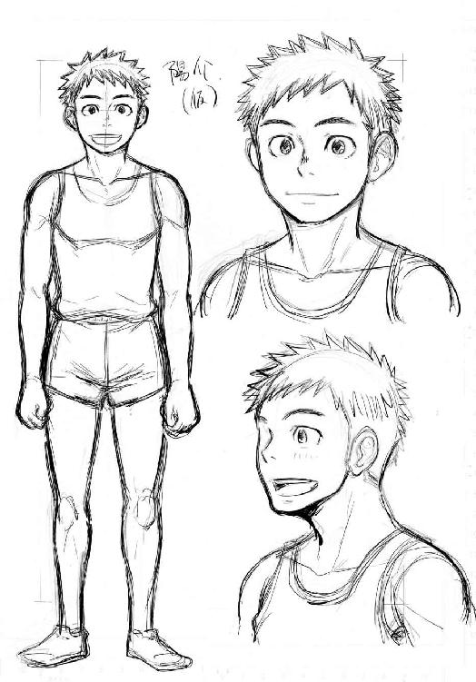
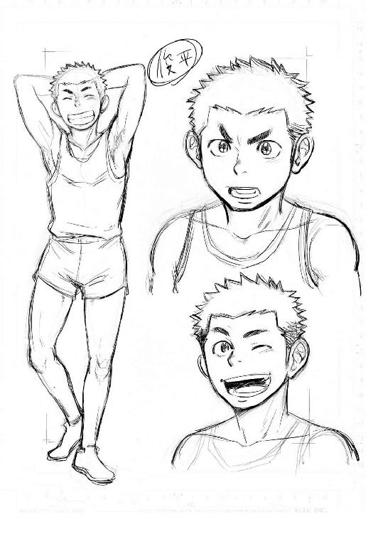
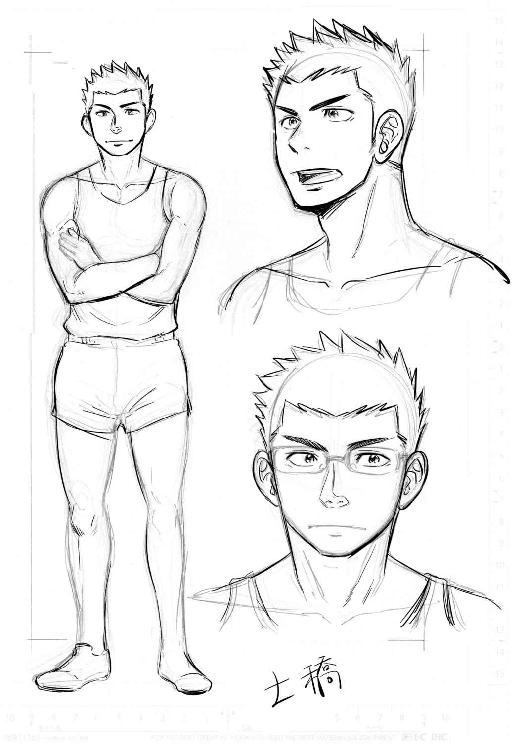
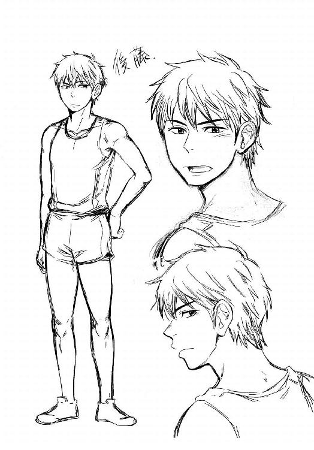
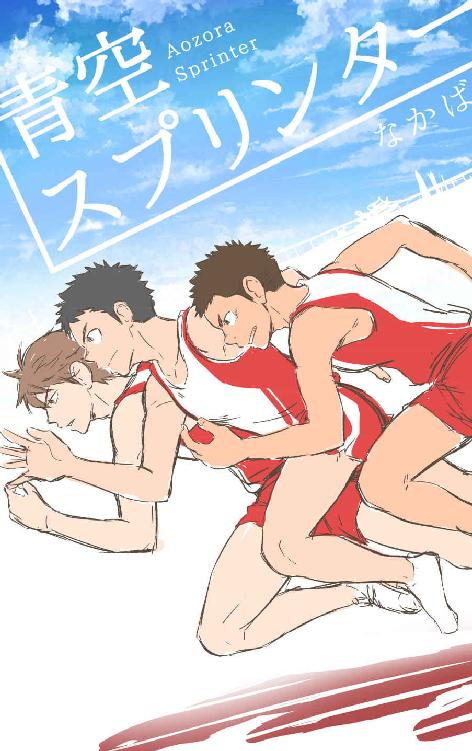
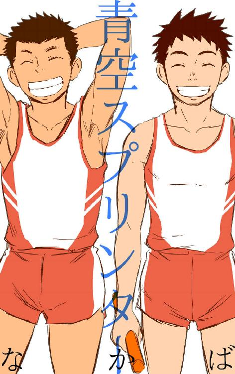
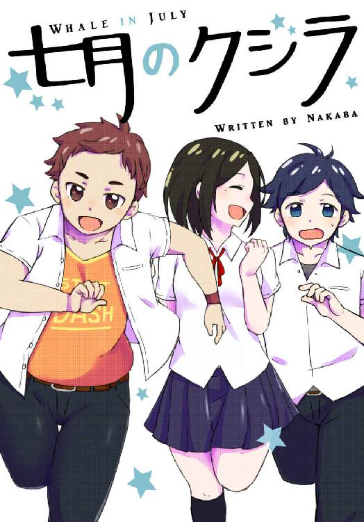

| 青空スプリンター | |
| なかば | |
| (2015) | |
なかば
◇１◇
グッと胸に押しとどめていた息を空にむかって思いっきり吐き出した。
「ア――ッ！」
と両手のこぶしをつき出して叫ぶ。力つきて脱力。ジリジリと照りつける夏の日差しは容赦がなくて、あお向けに転がるぼくをこんがりローストにする勢いだ。日に焼かれたタータントラックの熱が耳元でジワジワとセミの鳴き声をかすませる。陸上競技場のひらけた青空のまぶしさに、ぼくは目を細めた。
フィールド正面に立つメインポールでは、青や黄色の旗が軽快にパタパタとなびいていた。空のずっと高いところで強い風が吹いているんだ――。
でっかい空のはるか上空。ぼくらの町を吹きすぎる風の、その道すじを見てみたい。見ることが出来れば、つかまえることだって出来るはずだ。風をつかめばもっと速く走れるかもしれない。ぼくは大きく息を吸い込んで、ひらいた手のひらに白くかがやく太陽の輪っかを重ねた。
「ヨースケ、なにやってんだ？」
雲ひとつない一面まっ青な空に、俊平の色黒な顔がにゅっとあらわれて白い歯を見せた。あお向けに寝そべるぼくの顔をのぞきこんできたのだ。逆光になったヤツの輪郭が空の色に縁取られる。
「ん、ずっと息をとめてたらホントに死んじゃうのかと思ってさ」
「はあ？ なんだよそりゃあ」
俊平は眉をよせて、ひくい鼻のわきをポリポリと掻いた。
「小学校のときそんなジンクス、はやったじゃん？ 息を止めたままゆっくり四十二数えたら、ちっ息死」
舌を出してオダブツと白目をして見せる。
「バーカ、なにやってんだよ」
頭をコヅかれて少しムッとした。
そういう俊平だって消火栓のマンホールを百回踏んだら夢がかなうんだってジンクスを実践している。まちがって雨水のマンホールを踏んでしまうと十回分の減点だとか。登下校の道で身をよじって「うおー、あぶねえ！ ぎりぎりセ～フ」とマンホールを避けたり踏んだりしている俊平の方がずっとガキっぽい。
俊平はぼくと同い年の十四歳、よく焼けた小麦色の肌と笑うと見える白い八重歯がヤツのトレードマークだ。一緒に中学の陸上部で短距離をやっている。ぼくらの前にも後ろにもずっとまっすぐなトラックがのびていて、毎日まいにち飽きもせずに、その先の見えないトラックで肩を並べて走っている。例えば夏がくればプール開きをするように、新しいスニーカーを買ったら靴ヒモを通すように、ぼくらが走り続けているのはそれぐらいあたり前のことだ。
「なんだよ、バカにすんな」
コヅかれた抗議に口をとがらせる。
「だってよ......ホントにちっ息死で死んじまったら大変だろ？ 陽介が死んじまったら嫌だよ、おれ。いろいろ困るもん」
俊平が鼻をすすった。
「たとえば？」
「うーん、そうだなあ。たとえば......英語の辞書とかさ。アレ、陽介以外の誰が貸してくれんだ？」
くだらなくて拍子抜け。重くて面倒という理由で俊平は辞書を学校に持ってきたことがない。いいかげん自分で持ってこいよとつっこんでやる。
「ペアストレッチの相手もいなくなっちまうしさ。とにかく困るって。陽介とじゃねえと、なんか調子でねーし」
俊平が差し出した手を握りかえすと、ぼくはよっと身体を起こした。立ちあがったぶん夏の日差しが少しだけ近づいたような気がする。
「別にオレは誰とやっても調子変わんないけど、ストレッチ」
「なんだよ～。ツレねえやつ！」
頬をふくらませてゴリラ顔になった俊平の肩へ「いこうぜ！」と笑いながら腕をまわした。
強い風がトラックを吹き抜けた。風を追って空を振りかえる。オイカゼサンショウじゃ公式記録にはならないけど。それでも風をつかんで......もっとずっと速く走ってみたい。
「おーい、おまえら。いつまで柔軟やってんだ。タイムトライアルはじめるぞー！」
百メートルトラックのスタート地点、ホームストレートの端っこで部長の土橋先輩が手を振っていた。
午前授業のおわった土曜日の放課後。日の傾きはじめた市営の陸上競技場にぼくらはやってきた。スタンド席の屋根がせり出したところに部員たちが集まっている。ぼくと俊平も「はーい！」と返事をしてそこへむかった。
みんな日差しの濃いトラックを嫌って、準備体操をかねたストレッチをスタンドの屋根がつくる日影のもとで行っていた。いくら誰もいないからって百メートルトラックのどまん中でストレッチをしていたのは、ぼくと俊平ぐらいだった。
日に焼かれるのが好きだ。目を閉じるとまぶたの裏をまっ赤に染める太陽。全身に照りつける熱のかたまりに押しつぶされそうになるけど、そこをグッと我慢する。肌にふきだし首すじをつたう汗が、ユニフォームの背中まで濡らしていく。トラックに黒いシミをつくる。胸にたまった熱い空気をひと息に開放――。そういうのって生きてる感じがするんだ。だけどさすがに炎天を走りこむのはツライ。夏の太陽も練習中はちょっとだけ手加減をしてほしいかも。
みんなのところへ戻ってくると、土橋先輩がペットボトルの水を投げてよこした。水滴の浮いたボトルが手元ですべって、あわててつかみ直す。
「おまえらはアレだな。夏を通りこしてヒジョーに暑苦しい。見てるだけでのぼせちまうよ」
「日に焼かれるの気持ちいいですよ」
そう言いながら受け取った水をゴクリとする。ピチョンと水面に水滴が落ちていくイメージ。全身に水が透きとおっていく。
スポーツタオルで汗をぬぐった俊平が自分の腕に鼻を近づけた。
「うん......夏の匂いがする。ほら、部長も嗅ぐ？」
「そんなもん嗅ぐか！」
先輩のキリッとした眉がヘナチョコになった。土橋先輩はとてもいい部長だけど、もう少し冗談が通じてくれるといいよなあと思う。三年の先輩たちは部長のカタブツで慎重なところをからかって「土橋を叩いてわたる」と笑っている。ときどき「さわらぬ土橋にタタリナシ」になったりもするけど、そうなるとぼくらはひっそり肩をよせ合って嵐がすぎ去るのを待つしかない。
「走る前から日にあたるのもほどほどにしとけ。水分補給しっかりするんだぞ」
「ハイ！」と二人で声をそろえた。
スタンド席を振りかえると、一年が今頃になってあわててスパイクのピンをつけ直していた。
「お前らやる気あんのか～？」と、ぼくらと同じ二年の後藤が先輩風を吹かせている。
全天候舗装のトラック。えんじ色の合成ゴムを敷きつめたトラックをタータンって呼ぶ。学校の運動場はもちろんそんな立派な舗装がされていないので、ぼくらはタータントラックを求めてこうして市営競技場までやってくる。土と舗装トラックではスパイクの跳ねかえりがぜんぜん違う。スタートの蹴り足やコーナーの足運びで、その違いを身にしみて感じることになる。スパイクのピンだって替えなきゃいけない。公式の試合がちゃんとした競技場で行われるので、タータントラックの感触にも慣れなきゃいけないのだ。
一年をいびりおわってトラックへ下りてきた後藤が「上原、おまえ今日何秒ねらい？」とすれ違いに聞いてきた。後藤とは短距離のレギュラーを競い合うライバル......ということになっている。スパイクシューズのヒモを結びなおそうと屈んだぼくに、文字どおり上から目線で聞いてきた。
「そんなのわかんないよ」
ヒモをキュッと結びなおし、適当に受けながす。狙って出せるほど自分の走りに余裕なんてない。いつだって全力で走っている。
「次代のエース候補は、今日もスカしてるねえ」と、後藤は嫌味たっぷりに更衣室の方へ行ってしまった。中学に入ってから陸上をはじめたぼくらと違って、後藤の方が走り方だってタイムだっていいのに、ヤツはしょっちゅうぼくに絡んでくる。たぶん......後藤は気に入らないのだ。ぼくと俊平のことが。去年、ちょっとした事件があってからずっとそんな感じ。俊平とは一言も口をきこうとしないし、ぼくが一回だけ後藤のタイムを上回ってからは、エース候補なんて嫌味を言うようになった。まだまだまぐれなのに。短距離はたった十数秒の勝負だ。例えばスタートの合図をちょっと聞き逃しただけで、日差しに一瞬目がくらんだだけで、あっという間に順位なんて変わってしまう。集中力が大事なんだ。
「なんだよ後藤のヤツ、おれだっていちおライバルなんだぜ？ ありゃ眼中ありませんって感じだよな」
俊平が後藤のうしろ姿にベッと舌を出した。
市営競技場で行う今日の練習は記録会だ。このタイムトライアルの結果を受けて、夏の大会の四継メンバーも選考される。四継ってのは、四百メートルリレーのこと。ぼくも後藤も、そして俊平も四継のレギュラーを狙っていた。レギュラー四人を最終的に決めるのは顧問の先生だけど、今日のタイムトライアルの結果が決定に大きく影響するのはハッキリしている。わかりやすい勝負もぼくらには必要なんだ。
「おれって......やっぱ最近、存在感ないよなあ。空気と同じ？ ゲームでいうと村人Ａて感じじゃね？」
ハァと俊平がため息をついた。後藤が俊平を無視しているのはいつものことだけど。このところ俊平はタイムが伸び悩んでいた。たったコンマ何秒の差で浮かれたり落ちこんだり。その瞬きほどの時間を縮めたくて、みんな躍起になっている。短距離ってそういう種目だ。
階段わきのコンクリートの壁に二人して背をあずけた。汗に濡れた首すじのタオルがひんやりと冷たい。
「そんなことぜんぜんないって。俊平の存在感ハンパないから。二年になにか用があるとき、先輩みんな俊平に声かけるじゃん」
「えーとそれ、ただの雑用係じゃね？」
眉をひそめて怪訝な顔をされた。
「そーともいえるか？」
「ア？ 誰がパシリなんじゃ、おい」
怒った俊平がこぶしを振りあげて殴りかかるポーズをした。
「じょーだんだって、じょーだん」と身をすくめる。
タイムトライアルの前でピリピリしているのか、俊平のトーンはいつになくマジっぽい。実際、俊平は先輩たちから可愛がられていて、それがちょっぴりうらやましいのに。
「陽介はいいよ。四継が無理でも一〇〇があるもんなあ。夏の大会じゃ本気でいいとこまでいくって。おまえ、がんばれよ。ぜったい」
そう言う俊平の視線の先。トラックでは数本のダッシュをおえた一年から、順番にタイムトライアルがはじまろうとしていた。
「俊平だってがんばるんだろ？ 俊平まで後藤みたいな言い方すんなよ」
今度の大会は、三年の先輩の引退試合でもある。先輩たちだって本気で四継を狙っている。個人競技のイメージが強い陸上だからこそ、みんなでバトンをつなぐリレーは特別な種目だ。先輩たちだって最後にバトンをつなぎたいに決まっている。それでも万が一、ぼくと俊平でリレーの選手になれたら。一緒にバトンをつなげたら――。ぼくだけじゃダメなんだ。二人でがんばらなきゃ。
「は～あ......おれには無理だって。四継は」
俊平がエサのお預けをくらった犬そっくりな声をあげた。
スタートラインでは一年の沢崎が、スターティングブロックの感触をシューズの裏で確かめるようにして片ひざをついていた。タイムトライアルのトップバッターだ。緊張のにじんだ真剣な眼差しに、ぼくの胸もトクンと高鳴った。去年の自分を思い出す。
「弱気になるなって。どうせ倒れるなら前のめりに倒れろ、だろ？」
顧問の白井先生の口グセを言ってやる。コンマ何秒でも速く。転んで土にまみれたっていい。どんなに格好悪くても、誰よりも先にゴールラインにたどり着けばいいんだ。中学で陸上をはじめて、右も左もわからなかったぼくらはバカ正直にその通りにやってきた。
自分の気合も入れたくて、勢いよく俊平の背中にバン！ と両手をつくとヤツは「ぐお！ つ......つよいよ、叩きかたつよいって！」と大げさにむせ返りながら涙目になった。
◇２◇
いつか大きな試合でリレーのバトンをつなごう。一年のときに、ぼくと俊平が立てた目標だ。
俊平をはじめて見かけたのは中学の入学式で、何だか寝ぼけた犬みたいなヤツがいるなあと思った。寝グセ大爆発の頭で大あくびをかます姿が、ばあちゃんちで飼っている黒柴犬の「家康」にソックリだった。隣のクラスだったけど出席番号が近く、俊平はすぐ斜め前に並んでいた。これから新しい生活がはじまる期待と緊張の最中だっていうのに、校長先生の話を聞いている間、ヤツはずっとホケーとしていて。縁側で昼寝をしている家康の鼻っつらに、チョウチョウがとまっていることがあったけど。そんな間の抜けたヤツに見えた。中学ってのはいろんなヤツがいるもんだと。
数日後、クラスメートに誘われた陸上部の見学で俊平に偶然再会をした。入学式のときと顔つきが違っていて「へ？」と思った。本当に同一人物かと疑うほど、すごく熱心に陸上部の練習に目をむけていた。大あくびをかましていた入学式のときとは大違いで、わずかに呼吸も荒い。簡単にいうと興奮状態ってやつ。その視線に誘われて、ぼくも陸上部の先輩が走る姿に自然と目がむいていた。
――ブワッと全身を風が駆け抜けていった。
ヒョウとかハイエナとか、ＴＶで見た野生の動物たちが大地を足の裏でつかんで駆ける姿。先輩たちが走るそんな光景を目の当たりにして、思わずカッケーとため息が出た。人ってこんな風に走れるのかって。それまで走ることをそんなに強く意識したことはなかった。子供の頃から何も考えずに走ったり飛んだり跳ねたり、あたり前のようにしてきたけど。速いってこんなにキレイなことなんだと全身に鳥肌が立った。
「おれ、生田俊平っつーもんです」
「あ、オレは上原、上原陽介。となりのクラスだよね？」
一緒に来ていたクラスメートはサッカー部の見学にいきたいと言い出して、ぼくもそっちに誘われたけど、どうしてもその場から動くことが出来なかった。気がつくと陸部の見学をしているのは、ぼくと俊平だけで。ほぼ初対面のぼくらはひとことふたこと短い挨拶を交わしただけで、あとはずっと練習に見入っていた。プッシュ走を繰りかえす陸部のホイッスルが高くグラウンドに鳴り響いていた。
「なんかそれ......トイレがまんしてるみたい」
入部したばかりの頃だ。腕の振り方の練習にぼくが笑うと、俊平はカッと顔を真っ赤にして、
「しょうがねえだろ！ おれたちはまず、正しいフォームを身につけなきゃいけねーんだ。笑ってないで陽介もやってみろって」
と強引に腕を引っ張られた。
いまになって思いかえすと正しいフォームを身につけるなんて永遠の課題じゃないかとは思うけど。ぼくらは腕の振り方のひとつも知らなかったわけで。そう......俊平もぼくと同じ「ド」のつく陸上素人だった。あんな熱心に見学をしていたから、てっきり陸上経験者だと思ったのに。
言われるまま競歩のようにしてずんずんグラウンドを歩いて行く。横や斜めにブレないように、進みたい方向へ腕を真っすぐ振れるように。腕って前には出しやすいけど、意外と後ろには引きにくいんだって気がつかされる。肩甲骨のあたりの筋肉の動きに意識を集中する。腕がキレイに振れると自然と身体が前に進んで行った。
陸上初心者同士、いつの間にかぼくらは一緒に練習をするようになった。初心者が最初に取り組む練習メニューはだいたい一緒だしね。顧問の先生や先輩、同級生の陸上部員からもすぐにコンビ扱いされるようになって......というか、面倒くさいからひとまとめにされたんだろうけどさ。でもそんな相棒が出来たことがちょっとだけ心強かった。
「おう、生田いいぞ。そのハードルジャンプのリズムを忘れるな」
顧問の白井先生は、少しでもいい部分があればとことん褒める。褒めちぎる。まさに褒めて人を伸ばすタイプ。あんなに褒め上手だと先生のためにいっちょ頑張ってやるか！ なんて気にもさせられるよね。そのとき褒められていたのは俊平だけど。
ハードルジャンプは、等間隔に並んだひくいハードルをピョン、ピョンと両足でジャンプしていくトレーニングだ。これがなかなかどうして、リズミカルにはいかない。音痴と陸上は関係ないかもしれないけど、音楽の成績を見て思わず目を覆いたくなってしまうぼくに人よりリズム感があるとはとうてい思えないわけで。しまいには疲労で足もあがりきらず、大きくバンザイをしたままハードルに突っ込んでしまうありさまで。
着地したときに足のバネが縮んで、次の跳躍でグンと伸びる。そんな感覚と瞬発力を高める筋力をつけるのが目的だ......と、トレーニングマニアの佐倉先輩が言っていた。一個上の佐倉先輩はよく熱のこもった声でトレーニングの理論を教えてくれる。ぼくらはフンフンとわかったフリをして肯いているけど、実はさっぱりわかっちゃいない。難しい理屈はよくわからないので、ただ言われたとおりにやるしかない。
先生に褒められて「ハイ！」と、威勢よく返事をする俊平にちょっとジェラシーを感じることもあった。不器用なぼくと違って、ヤツは器用で、なんだって速攻でやってみせる。ぼくは同じことをするのに倍は時間がかかった。オマケに一度出来たと思ったことも、再現しようとしたとたん、ワケがわからなくなってしまう。
「成功したときのイメージをつかんで離すな」なんて先生は言うけど。イメージの保存方法がまるでわからない。部活の練習をすごろくみたいだなあと感じることがある。ぼくが止まるマス目に書いてあるのはいつだって「フリダシに戻る」だった。
「３マスすすむ」や「ラッキー臨時収入、一万円！」なんてマス目に止まっている他の部員を横目に、ふて腐れて黙々と練習をすることもあった。まあ練習中にベラベラしゃべるヤツはいないけどさ。そんな風にぼくが浮かない顔をしていると、俊平はふらっと近寄ってきて「練習おわったら、もうちょっとつきあってくんね？」ときまって声をかけられた。部活のあとも薄闇に包まれたグランドで納得がいくまで二人で走り続けた。
練習で張った筋肉をペアストレッチでほぐしながら、背中合わせの俊平に「ありがと」と小さく言ってみたことがある。居残り練習をするとき、たいてい俊平がぼくの練習につきあってくれていたのだから。聞こえているのか聞こえていないのか。そのとき俊平は勢いよく「おりゃ！」とぼくの手首を持って前屈をした。
「イテテテテ！」
俊平の背中へあお向けに持ちあげられて見あげる薄闇の空に、群青の雲と淡い光がどこまでも折り重なって見えた。
はじめての公式戦は七月。ぼくも俊平も一回走っただけでおわってしまった（つまり予選落ち）。練習で身についたと思っていたことが、いざ走り出すと全部すっ飛んでしまって。気がつくとゴールラインのむこうで、両手を膝について肩を上下させていた。試合のあともフワフワと地に足がつかなくて、先に走りおえたぼくに俊平が「どうだった？」と聞いてきたのに「え？」とかえすのにさえ三秒くらいディレイしちゃってた。
寝ぼけたぼくの目を一瞬で覚まさせたのは、四百メートルリレーの準決勝だった。
ぼくら市立南中学校の四継は準決にすすんでいた。スタンド席から先輩たちを応援していて、そのバトンパスを見た瞬間、水をかえたばかりのプールへダイビングした気分になった。目がシャッキリすっきり。
四人の手を次々にバトンが渡っていく。リレーだから当たり前の光景だ。でもただ四人が順番に走っているんじゃない......「南中陸上部」のゼッケンを背負った一人の選手がトラックを駆けぬけて行くように見えた。一人の走者となって矢のように飛び進んで行く。
先輩たちの姿と競技場の異様な盛りあがりに圧倒されていた。普段の練習でも先輩たちのバトンパスは見ていたはずなのに。その日、ぼくの目に映ったバトンパスは凄まじかった。バトンが次の走者に受け渡されるたび、先輩たちを取り巻く風の色が変わっていく。銀色のカラーバトンが先輩たちのスピードをつないでいく。他の部員と一緒になって声を張りあげた。春先の見学で先輩たちの走りを見たときともまた別の感動だった。
四継のレギュラーになれなかった三年の先輩が、ぼくらの横で「たのむぞ......うわあ、ヤベェ！ そのまま、そのままいってくれって！」と声を裏返して叫んでいた。普段は黙々と練習をしている先輩だった。先輩たちの手に受け渡されているのは、リレーのバトンだけではないんだって感じた。
「すげえ......カッケーな。四継って」
つぶやくように言った俊平にぼくは肯いた。
「うん、すごいよ。あんな風に走りたい」
先輩たちは惜しくも決勝にはすすめなかった。だけど、競技場に夏の雲のようにわきあがった熱気と興奮に包まれて、いつまでも俊平と肩を抱き合っていた。いつかリレーのバトンをつなごう。それがぼくらの目標になった。
新人戦をおえた秋口に、ポッとすごい奴が入部してきた。後藤佑が南中に転校をしてきたのだ。小学生の頃から東京の少年陸上クラブでもそこそこ評判になっていたという後藤は、まあとにかくヤルことナスこと格が違かった。同じ一年とは思えない。後藤が俊足の馬だとすれば、ぼくらがナスビに爪楊枝をさした存在に思えてくるのだ。自分の走り方を既に知っている迷いのない走り。聞けば両親も陸上の選手だったそうで。サラブレットとはこういうヤツを言うんだろうなあ......て感じ。
「おまえすごいなあ。一年なのに」
心の底から感心しましたという俊平に、後藤はジロリと下から上まで値踏みするように眺めまわして、
「別にすごいのに一年とか歳とか関係なくない？ 短距離で速くないヤツはザコだから」
と鼻で笑った。
「なんだよその言い方......！」
まるでぼくらのことをザコ呼ばわり。まあ本当のことだけど。飛びかかりそうな俊平の肩をつかんで、引き止めてやった。
嫌なヤツ。それが後藤の第一印象。いまでもその印象は変わっていない。夏の合宿――全部話すと長くなるのでダイジェストで言うと、練習のあと胃が食べ物を受つけなくなるほどの地獄――を通して連携の強まっていたぼくらの中で、高飛車な後藤は完全に孤立していた。だけど速いのだ。文句なく速くて、先輩たちのように身体が出来あがったら間違いなく優秀なスプリンターになる。完全に無視することも出来ない。むしろ実力を知らしめて、後藤の方からみんなを黙らせていた。
「あのさ、邪魔なんだけど。なにもする気がないなら、帰れば？」
後藤が入部してからしばらくたったある日の練習。気がつくとぼくはグラウンドのまん中で立ちつくしていた。
「へ？」
マヌケな声を漏らしたぼくに、後藤がクールな視線をよこす。
「やる気ないなら、帰れっていってんだよ」
きな臭い気配を感じたのか、すぐに俊平が駆けよってきてくれた。その勢いのまま俊平が後藤の肩を押す。
「おい、なにつっかかってんだよ！」
「――いいって。ごめん、オレが悪かったんだ。ぼうっとしてたから」
俊平の手をつかんで行こうとする。この頃、ぼくは練習中に集中力を無くすことが多くなっていた。
「ねえ、上原さ。陸上部やめてくれない？」
背後の声に振りかえる。肩を押されっぱなしで納得がいかなかったのか、後藤が険悪な表情でクチビルの端を歪めていた。
「練習中に突っ立っていられても迷惑だし。上原だって他のことやった方が有意義なんじゃない？ やる気のないやつは、走るのやめた方がいいって。時間のムダだから」
何を言われたのかと理解する前に、俊平が後藤に飛びかかっていた。もみくちゃになってア然とする。倒れた二人の背中が、ローリングしながら土煙を巻きあげた。右に左に回転してマウントを取り合う。馬乗りになった俊平のこぶしが、後藤の顔面に振り下ろされた。にぶい音が鳴る。
「おまえら、なにやってんだ！」
グラウンドに怒声が響き渡った。土橋部長が猛ダッシュで飛んでくる。三年の先輩が引退して、陸部は土橋先輩が部長になっていた。他の部員たちも駆けつけて、もみ合う後藤と俊平はすぐに引き剥がされた。何がおこったのか理解しようとする前にどんどん場面が展開してしまって。
殴られた興奮もあったのか、先輩に羽交い絞めにされてもまだ抵抗しながら、後藤が声を張りあげた。
「上原はなんのために走ってんだよ？ 勝つためだろ？ ただ何となく部活きてますってのが一番ムカつくんだ」
後藤がぼくを睨む。走る理由。それは......かっこいいから。先輩のように走りたかったから。それだけか？ 自分はいったい何のために走っているんだろう。何のために苦しい練習をこなしているのか。俊平だって着実に速くなっている。後藤みたいに同じ歳でスゲーヤツもいる。なのにぼくは夏の公式戦からちっともタイムが伸びなくなっていた。秋の新人戦だって鳴かず飛ばずのどうしょうもない結果だった。初めての試合のときは「舞いあがちゃってました、テヘヘ」と言い訳も出来たけど。
「陸上をやる理由は勝ち負けだけじゃないだろ」
土橋先輩がピシャリと言う。後藤はまだ何か言いたそうにしたけど、土橋先輩の無言の剣幕に口を閉ざした。それからぼくらは「さわらぬ土橋にタタリナシ」の言い伝えを身をもって体験することになった。その恐ろしさを例えるならば......夏合宿の地獄が、ハワイアンビーチに寝そべってトロピカルジュースを片手に、水着姿のカワイイ子に囲まれちゃってる楽園かと思えるほど。出来ようが出来まいが無慈悲に続く笛の音。部室に響く合図に合わせて、足上げ腹筋が永久に続いた......。何が一番怖いかって、腹筋で顔をあげるたびに鬼の形相の土橋先輩が見えるってこと。もう二度とこの人を怒らせないと誓った。
その出来事があってから、後藤は部内でそれまでに増して単独行動をするようになった。後藤と俊平は必要なとき意外、めったに口をきかなくなってしまったし。二人が話をするのは業務連絡のときだけ。
ぼくはというと、体調不良を理由にそれからしばらく部活に行かなくなってしまった。土橋部長が怖いってのもあったけど――。
『上原はなんのために走ってんだよ？』
後藤の声がずっとリフレインしていた。誰もいないトラックに立ってポツンとしてしまった気分。右を見ても、左を見てもそこには誰もいない。みんなぼくを置いて先へ行ってしまった。いや、ホントはずっとそんな思いに駆られていたんだ。後藤とのことはキッカケに過ぎなかった。何のためにこんな血の滲むような努力をして、毎日走っているのか。走っても走ってもフリダシに戻るばかりじゃないか。練習にも身が入らず、ぼうと突っ立っていれば、そりゃ後藤じゃなくても迷惑と思うに決まっていた。
ただ、走るのをやめたらやめたで、何かが身体からぽっかり欠けてしまった。エンジンのない車。電池の入っていないリモコン。カレーの入っていないカレーパン（？）。まあとにかくそんなスカスカな感じで。部活をサボってることを親に怪しまれないようブラブラと時間をつぶし続けた。ゲーセン行ったり、本屋で立ち読みをしたり。あやうくスラムダンクを全巻読破しかけたり。ホントただ時間をつぶしているだけ。楽しくも面白くもない。スラムダンクは面白かったけどさ。気がつくと出てくるのはため息ばかり。
といって無理に別の何かをやろうとしても、ちっとも身が入らなかった。短針も長針もない時計があったとしたら、その秒針ばかりがクルクルまわっている状態に近い。チクタクと気ばかりが焦って、結局、いまが何時なのかもわからない役立たずの時計と一緒だった。
「ちょっと待った！ 待てってば――」
部活にいかなくなってちょうど二週間。陸部のメンバーに見つからないよう、昇降口でコソコソ運動靴を取り出していたぼくを呼び止める声にビクッとして振りかえると、俊平だった。練習があるハズなのにヤツは学ランのままだった。下駄箱から放り出したスニーカーを急いでつっかけながら駆けよってくる。
「一緒に帰ろうぜ」
と手にしたスポーツバックをぼくの尻にぶつけてきた。
帰り道、河川敷の土手に腰をおろして西日にかがやく川面を二人して眺めることになった。近くの空地で小学生たちが草野球をしていた。
「このまま、部活やめちゃうのかよ？」
俊平の口から出た「やめる」という言葉がリアルに響く。ぼくはそういう崖っぷちにいた。
何も言えずに黙っていると、
「陽介がいなくてさ、なんかつまんないんだよなあ。練習」
俊平が土手に転がっていた小石を川面に放り投げた。その肘に大きくすりむけた痕があった。もう治りかけのカサブタ。後藤ともみあったときについたんだろうなあと思った。俊平が投げた小さな石の軌跡は、そのまま秋の日差しを弾く水の流れにのまれていく。
「うまくいえないけど......おれたぶん、陽介がいるから走ってんの。練習キツイけどさ。一年のコンビって言われんの嬉しいし。おまえが練習こなくて、なんか張り合いない」
そう口をとがらせた俊平へ、ぼくは自然に「うん」と肯いていた。
ぼくの身体から欠けていたものの正体。そんなのはじめっからわかっていた。右を見ても左を見ても、誰もいないトラックなんてウソっぱちだ。俊平が隣を走っていた。コイツに「速い」と思ってもらいたかったんだ。ただそれだけ。俊平を一番にそう思わせたい。だから辛くても走れていた。きっとそれはヤツも一緒で。
ギラッとした川面のかがやきに目がくらむ。耳に届く川のせせらぎに混じって、遠くから陸上競技場の声援が聞こえてくる。先輩たちが走った四百メートルリレーの光景を思いかえしていた。
何のために走っているのか。後藤の質問にハッキリとした答えは出ない。後藤なら「自分のため」と即答する、きっと。陸上は個人競技なのだから。でも自分のためだけで走り続けるなんて本当に出来るのだろうか。出来る人もいるのだろう。ただ少なくとも、リレーでバトンをつなぐとき、自分だけではない誰かのためにみんな走っているのではないだろうか。
「二週間もサボっちゃって......。土橋先輩、怒ってるだろうなあ」
ぼくがつぶやくと、
「ん、おれも一緒に怒られてやっからさ」
と俊平はあぐらをかいて、のん気に身体を揺らした。
土手沿いに続く並木の葉が赤く色づきはじめる季節だった。草野球の小学生が放った内野ゴロを目で追いながら、ぼくは「一回休み」と書かれたすごろくのマス目からようやく一歩を踏み出した。
それから少しずつ走り方がよくなっていった。たぶんあの頃、ぼくはこの先だって何度ぶちあたるかわからない最初の壁に正面衝突していたのだと思う。あんな気分になるなんて、そうそう壁には立ちふさがっていただきたくない。でもおかげで、少しだけ走るってことがわかったような気がする。ほんの少しだけ。それも不確かなものだし、三歩進んで二歩下がるの性分は相変わらずだけど。
そうこうしているうちに冬がやってきた。冬眠したカエルはただ寝ていればいい。だけど、短距離の冬は筋トレ漬けの鍛錬シーズンだ。試合の多くなる長距離部員の応援をしながら、ひたすら地味な作業の繰返し。正直きついし。坂道ダッシュがなぜ必要なのか。傾斜した道に足をつくとヒラメ筋がどうのこうのと、佐倉先輩が語りだす。でもぼくらが聞きたいのは、冬の間あと何回この絶望を乗り越えなければならないのかってことで。ふくらはぎにたっぷりたまった乳酸がうらめしい。この世から傾斜がなくなって、どこまでも地面がまったいらになればいいのにと本気で願った。
ばあちゃんちの黒柴「家康」の生あくびを誘うポカポカした陽気にぐっと背すじを伸ばす。ようやくむかえた春。グラウンドに指先をつく。クラウチングスタートの姿勢からゴールの白線を静かに見つめる。スタートの合図とともに走り出した。イメージしたフォームに身体を近づけていく。それをするための筋力が身体の芯についた。体幹っていうんだ。加速の終点はおわりじゃない。イメージ通りの腕のフリと足の動きが身体を支えてくれる。これ以上速く走ろうと思わなくていい。加速がおわっているのに速く走ろうとするから、フォームがブレて減速する。スピードを維持するんだ。見慣れたグラウンドの景色が光線になって背後に消えていく。トップスピードのまま、ゴールラインを踏み越える――。そんな上手く走れたときのイメージを何とか頭の中に保存することが出来た。
いつの間にかぼくのタイムは俊平を追い越し、たまには後藤とさえ張り合えるようになっていた。あくまで『たまには』だけど。白井先生がため息まじりに「上原......おまえ、こんなに速くなるなんて、先生きいてないぞ」と頭をワシワシとしてきて。ぼくはそんな子ども扱いを甘んじて受けながら思う。先生は本当に褒め上手なんだ。
◇３◇
お風呂に入りながら、こぼれ出てくるニヤニヤをかみ殺していた。
木製のスノコの上に尻をペタンとつく。ザラッとしたナイロン生地の垢すりで牛乳石鹸を泡立てた。一回母さんがホワホワな泡になるエクストラリッチ・ボディなんちゃらを買ってきたけど、ぜんぜん洗った気がしなかった。父さんと抗議をして元に戻してもらったのだ。ぎゅっと中身のつまったシッカリとした泡になる。牛乳石鹸、良い石鹸だ。やっぱこうじゃないとね。ぼくは機嫌よく調子外れの鼻歌をうたい、身体をごしごし洗いながら今日のタイムトライアルの結果を思い出していた。タンクトップで日に焼けた肩口が赤くほてって少しヒリヒリとする。
市営陸上競技場でのタイムトライアルがおわり、予告どおり白井先生から四継レギュラーが発表された。一走は後藤。タイムはもちろん申し分ないし、スタートダッシュの技術の高さを買われた一走だ。二走はぼく。最近急成長ってことで期待をされていた。嬉しいけど不安もある。二走はどこの学校もエースをぶちこんでくることが多い。皮肉にも後藤の言う通りエースのポジションになってしまった。まあ、ぼくの場合はどちらかというとダークホース的な感じ？ 他の学校と同じ事をしててもうちは勝てないんだから。せいぜいホンモノのエースたちに噛みついてやろうと思う。そして三走はなんと俊平。中継ぎの重要なポジションだ。ねばりのある着実な走りをする俊平に合ったポジションだと思う。アンカーは部長の土橋先輩。現南中陸上部のホンモノのエースだ。三年の先輩は土橋部長しかレギュラーになれなかった。でも他の先輩は誰も先生の決定に文句を言わなかった。それだけぼくらの責任も重大だ。厳粛に受け止めてですね、これからの練習に精をださなきゃいけないわけで――。
それでもぼくは顔に浮かぶニヤニヤを押さえきれなかった。
『おれが四継で......本当にいいのかなあ？』
発表のあと。俊平は心細そうな顔をした。
『なにいってんだよ、いいに決まってるって』
『本当に？ 本当の本当にこのおれが四継レギュラーでいいわけ？ たぶんこれ夢だろ？』
自分のほっぺたをグイとつまんだ俊平が涙目になる。
『それが現実の痛みってやつ』
タイムトライアル前にぎゃあぎゃあと弱音ばかり言っていた俊平はいざレギュラーに決まったとたん、呆けてしまったのか......実感がわかないのか。ずっとそんな調子だった。帰りのバスの中でもただ自分の手のひらを見つめていて、話しかけてもうわの空。明日は部活が休みになったし、週明けには目を覚ましてくれていればいいけど。
「ねえ、陽介。リレーのメンバーに選ばれたんだって？」
曇りガラスのむこう、脱衣所から母さんの声が聞こえた。とびらのむこうで、ぼくがぬぎっぱなしにした練習着を片付けてくれている気配がする。市営競技場からの帰り道。駅で父さんにばったり会って一緒に帰ってきたから、その父さんが情報源だろう。
「うん、そう。俊平もいっしょ」
とびら越しに少し声を大きくした。
「あらそう！ 俊平くんも。よかったわ」
俊平は一度うちに泊まりにきたことがあって母さんとも顔見知りだ。母さんは俊平のことをかなり気に入って、オトコノコなんだから沢山食べなさいよ！ と特大大盛りにされた夕食のご飯に俊平は目を白黒させていた。母さん的には、ぼくらぐらいの年代が一番イイらしい。何がイイのかはさっぱりわからないけど、せっかくオトコノコの母親をやっているのだから「この醍醐味を堪能しないとね」だそうだ。
オレンジ色に染まった風呂場の格子窓から、豆腐屋さんの笛の音がパーポーと聞こえる。最近はそういう昔ながらの売り方が流行っているんだって。庭で黒柴犬の家康がラッパに合わせて遠吠えをしていた。ばあちゃんたちの旅行に合わせて、しばらく預かることになったのだ。
普段からおっとりとした性格で、一分に一回はあくびをしてやる気のなさそうな家康だけど、そういや俊平には妙に懐いていた。類は友を呼ぶのか。ばあちゃんが家康を連れてうちへ遊びに来ているときに、俊平に遭遇したことがあった。寝てばかりで運動不足気味の家康を気遣ったばあちゃんから「散歩に連れて行ってやって」と頼まれた。散歩の最中、家康は見慣れない景色にきょろきょろとしていたが、偶然会った俊平を見るやいなやワオーン！ と飛びついて、尻尾を全開に振りまくっていた。
『ちょ、なに、コイツ？』
『ん、ばあちゃんちで飼ってる家康』
『そうじゃなくて、なんでコイツこんなに舐めてくんの？』
中腰になった俊平は、家康にベロベロ舐めまくられながら顔をウーとしかめていた。
『さあ？ なんか犬の好きそうなニオイでもしてんじゃない、俊平』
『おれからどんなニオイが発してるっていうんだ？』
そんなことを言いながら、懐かれてまんざらでもないのか苦笑いを浮かべていた。
『おまえ、家康なんてすげえ名前もらったなあ。それ、天下泰平を成し遂げた武将だぜ？』
俊平にそういわれても家康は「ン？」と首をかしげて、次の瞬間また俊平に飛びついていた。不意打ちをくらった俊平が背中から倒れる。
『うわ、ちょっとタンマ。なに興奮してんだよ、おまえ！』
悲鳴をあげる俊平を思い出して、また顔がニヤけてしまう。
そのとき急に風呂の引き戸がひらいた。ぼくはビックリして泡だらけの身体のまま湯船にザブンと飛び込んだ。
「ちょっと！ なんで突然はいってくるんだよ！」
「なによ、別にいいじゃない。減るもんじゃなし」
「そういう問題じゃないよ！ 母さんにはデリカシーがないの？」
ぼくはのぼせたんだか何だかで、顔を熱くして叫んでいた。
「母親ってのはね、息子の成長を見守る義務があるのよ」
なるほどなるほど......ちゃんと成長してるわね、と母さんはひとり肯いて「お豆腐屋さんもういっちゃったかしら。そうそう家康も散歩させなきゃ」と、パタパタと去って行った。
「母さんのバカチン」と頬をふくらませたぼくの前に、牛乳石鹸の泡がぷかぷかと浮いていた。
四継のレギュラーになった部員は、さっそくバトンパスの練習がはじまった。リレーはバトンパスが命だ。前走と後走がいかにトップスピードで、スムーズにバトンの受け渡しを行えるかで勝敗が決まる。四人ひとりひとりのタイムがそこまでじゃなくても、バトンパスが決まれば全国だって夢じゃない。
完璧な四継は、まるで一人の走者が矢になって四百メートルを走り抜けるように見える。昨年見た先輩たちの四継。引退していった先輩たちの流れるようなバトンパスはすごかった。目指すはそんな高みだ。でも、二走を走ることになったぼくは何度やっても、まともにバトンを受け取ることが出来なかったし、受け渡すことも出来なかった。後ろからくる後藤とつまり気味になったり、三走の俊平には追いつけずにバトンを流してしまったり。月曜からはじまった練習も、金曜をむかえたところで何の進展も見られなかった。
「スタートのタイミングをもっと早めろ。前走の歩測を数えるんだ。後藤の一足は何メートルだ？ ここを目印にしろ」
四走のブルーゾーンから戻ってきた土橋先輩がシューズの踵でグラウンドのコースにマーキングをする。
ぼくは不甲斐なくて、「はい」と力なく答えた。三歩進んで二歩下がってる場合じゃない。ひとりで走っているのとはワケが違う。リレーは団体競技なんだ。先輩たちの美しいバトンパスを思いかえす。あんな風になれるのだろうか。みんなの足だけはひっぱりたくない。
「後藤ももっと上原に合わせてやれよ」
土橋部長がため息混じりに後藤へ声をかける。
「いやですよ、なんでコイツのためにスピード落とす必要があるんです？ ふつーに考えれば、遅いやつが速くなればいいでしょ」
「だから、おまえな、その言い方は――」
「や、いいんです。そうだと思いますから」
口をきつく結んだ。確かに後藤は無理なことを言ってるわけじゃなかった。ぼくの百メートルの記録からすれば、出せないスピードではない。
次走者が待機してるエリアのことをブルーゾーンという。次にバトンを受け取るエリアがテイクオーバーゾーン。その終了までにバトンを受け取らなければいけない。バトンを受け取れずに一歩でもテイクオーバーゾーンの終了ラインを踏み越えれば失格だ。しかも加速に乗って出来るだけスムーズにバトンを受け取り、次の瞬間トップスピードになることが理想。そんなことに意識が集中するあまり自分のフォームも崩れてしまった。ちょっと速く走れるようになったからって、ぼくはいい気になっていたのかもしれない。
リレーは特別な種目だってことを痛いほど実感した。三年の先輩を差し置いてレギュラーになったのだから、絶対に失敗出来ないのに。プレッシャーばかりが重くのしかかって、ぼくらの連携はバラバラだった。ぼくと後藤がもめているといつも助け船を出してくれる俊平も、さすがに自分のことでせえいっぱいなのか、口数少なく練習を続けていた。というか俊平のヤツ......先週からずっと様子がおかしなままだ。もう何がなにやら。とにかく状況はサイアクだ。
「もう、今日のバトンパスはこれくらいにしておこう」
やれやれ、とは言わなかったけど土橋部長はそんな感じで腰に手を当てた。
「なあ、もうちょっとバトンやんない？」
ぼくと俊平だけでも、まずは息を合わせなきゃ。歩き出した俊平を呼び止めた。
「――わりぃ、おれロードワークいってくる。最近走りこめてなかったからさ」
「え、あ......うん、そっか」
じゃあオレも......と言いかけたけど、ひとりで走りたいのだろうと感じて、グラウンドを出て行くうしろ姿を見守った。練習で上手くいかないことがあるとダンマリを決め込むとぼくと違って、俊平は長い走り込みをはじめるクセがあった。その気持ちは何となくわかる。頭を真っ白にしたいんだろう。走ってるときは何も考えなくてすむから。そんなヤツの長いロードワークも最近特に多くなったと思う。遠ざかる俊平の背中を見ながら、ぼくは短く息をついた。
日が落ち始めると、グラウンドの視界は急に狭くなっていく。学校のグラウンドには照明がないので、暗くなる前に野外で練習をする部活は引きあげることになる。日が延びたおかげでだいぶ遅くまで練習出来るようになったけど。片付けを急ぐ部員たちの輪郭がぼやけ、藍色にそまった生ぬるい夏の夕刻がぼくたちを包んでいた。
片付けが進むなか、ぼくはキョロキョロと俊平の姿を探していた。ロードワークに行ったまま、結局グランドの練習にヤツは戻ってこなかった。いくらなんでも、あのままずっと走っていたとしたらオーバーワークだ。後藤のペースに巻き込まれて、三走の俊平のことを何も考えてなかった。バトンパスのことで俊平に何かを悩ませてしまったかも。今更気づいてどーすんだって感じだけど。
「おーい、上原！」
ちょっと離れたところから土橋先輩の声がかかる。片付けもしないでうろうろしていたことを怒られるのかと、「わ！」と思わず声が出て恐るおそる振りかえった。
先輩はぼくの様子に肩をすくめる。
「後藤にも声をかけて、白井先生のとこちょっときてくれないか。体育職員室だ」
先輩は親指を立ててクイクイと体育館の方へ動かした。
何だろ......リレーのことだろうか。後藤を探すのも面倒くさいし。とりあえず「わかりましたー」と返事をしてから、あれ？ リレーのことだとしたら、俊平には声をかけなくてもいいのかな......と、自然と首がかたむいた。
体育職員室は体育館とプールの間に校舎が出っ張るかたちで併設されている。体育教師の郷野先生は生徒指導もしていて、問題のある生徒をよく体育職員室に呼びつける。生徒の間では「監獄行き」と呼ばれていて、正直、体育職員室にあまりいいイメージはない。白井先生は国語の先生だけど、陸部の一部のメンバーに話があるとき、たまにこの部屋を使っていた。監獄の主、郷野先生がオフィスチェアにふんぞりかえって何かの資料を見るフリをしながらチラチラこちらの様子をうかがっていた。
集められたのは、やっぱりリレーのメンバーだった。ぼくと後藤、土橋部長にトレーニングマニアの佐倉先輩もいる。そして白井先生の横には気まずそうにする俊平がいた。俊平を探せと言われなかったのは、最初からここにいたからだった。
「まあそういうことだ。三走は生田にかわって、佐倉でいくぞ。いいな」
ぼくらの前に立つ白井先生はそうしめくくった。生田からレギュラー辞退の申し出があったと、先生はあまり深く理由も言わずにかわりに佐倉先輩が走ることをぼくらに伝えたのだった。先輩たちは「はい」と声を揃える。後藤は怪訝な表情をして、ぼくと俊平を交互に見比べていた。俊平は下をうつむいたまま目を合わせてくれない。ぼくは何がどういうことなのか事態がのみ込めずにいた。
「ねえ、ちょっと。帰ってきてるんでしょ？ 夕飯前に家康の散歩、おねがいねー」
母さんの声が聞こえる。自分の部屋で練習ジャージを着たまま、ごろんとベッドに寝転がっていた。今日はぼくが家康の散歩をさせる当番だ。ばあちゃんとじいちゃんは金婚式記念のスペイン旅行からまだ帰ってこない。何でスペインを選んだのかと思ったら、生の闘牛をどうしても見たいのだそうだ。ばあちゃんたっての希望で。
「――うん、わかった」
張りのない声で答える。
ぼくは庭でぐてーと寝そべっている家康の首輪にリールをつけるとクイとひっぱった。
「ほら、散歩いこーぜ」
家康は、やれやれよっこらしょといった感じで立ちあがった。いちお小さく尻尾を振ってくれている。薄闇の濃くなる夕暮れに、ぼくと家康は遅い散歩へと出かけた。
ポツポツと灯り始める街灯。急に立ち止まったぼくを家康が振りかえって「ハアハア」と口で息をしながら見つめてきた。気がつくとずいぶん遠くまできてしまっていた。隣り町にも近い。なだらかなカーブを描きながらケヤキの並木道が公園沿いに続いていく。よく部活のロードワークで走る道だった。自然とこの辺りに足がむいていた。
短距離は走りながら何か別のことを考える暇なんて全くないけど、ロードワークの最中にはいろんなことを考える。上手くいかない練習のこととか、試合を目前にした緊張とか。校長先生はウワサどおりのカツラなのかねえとか。しょうもないことも浮かんでくる。考えて、考えて、最後には頭をまっ白にしてしまえる。熱い呼吸を繰りかえし、走り続けるぼくがそこにいるだけだ。俊平や他のみんなもきっとロードワークをしてるときは同じだと思う。
「そろそろ引きかえそっか」
ひとりごとのように家康に話しかける。
濃く緑の茂る公園のわきを家康と歩きながら、ぼくの頭の中で今日の出来事がぐるりと一周していた。上手くいかないバトンパスの練習。長いロードワークに出かけて行った俊平。突然告げられた四継レギュラーの交代。体育職員室を出たあと、納得がいかないぼくは俊平を捕まえて問い詰めた。レギュラー辞退ってどういうつもりなんだと。
『......タイムトライアルの結果だよ。これが本当のところだろ？』
俊平の言葉を思い出す。ヤツはタイムトライアルの結果だと言った。
そうだったのだ。市営競技場で行った短距離ブロックのタイムトライアルの結果は、一位が土橋先輩、二位が後藤で三位がぼく。四位は佐倉先輩だった。だから五位の俊平が選ばれたとき、ぼくはびっくりしたし、俊平は鼻をつままれたような顔をしていた。佐倉先輩には悪いと思ったけど、ぼくは心の中で飛びあがって喜んだ。実際、佐倉先輩と俊平は普段の練習でも抜きつ抜かれつといった感じで、どちらが選ばれてもおかしくはなかったのだ。
『でも、先生が決めたことだし。そんなんで遠慮する必要なんて全然ないって。佐倉先輩だってきっと――』
『おれ、みんなの足をひっぱりたくないんだ』
足をひっぱりたくない。上手くいかないバトンパスが頭によぎる。それはぼくも同じだった。
ヤツの声の調子が荒くなっていた。
『佐倉先輩が走ったほうが、ぜったいいい結果がでるって。あれ、何のためのタイムトライアルだったんだよ。おれじゃダメなんだ』
『でも――』
まだ何とか説得しようとするぼくに、
『一週間考えて決めたことだから』
もうこれ以上何も言わないでくれ。俊平はそんな顔をした。何を決めたっていうのか。何をひとりで決めちゃってんだ。
『わかんないよ、そんなのぜんぜん』
悔しくてそう言った。リレーが決まって嬉しくて。舞いあがって。全部ぼくのひとりよがりだったみたいで。
『そうだよ......陽介にはわかんねえよな。おれの気持ち。おまえは速いんだ。きっとこの先、おれは陽介に一生追いつけない』
俊平が弱々しい笑顔を見せた。突然そんな言い方をされてぐわっと目に涙がたまった。こぼれ落ちそうになるのを懸命にこらえた。何かをしゃべったとたん、涙がこぼれてしまいそうで、ただ俊平をじっと見つめた。
ヤツはバツが悪そうに視線をそらした。
『――ごめん。こんなの陽介に言うことじゃなかった。今日、おれ弟迎えにいかなきゃいけないから』
そのまま背をむけて行ってしまった。追いかけることも出来なくて。やばい、やばいって気持ちがどんどん膨らんでいった。
ぼくは気がついていたんだ。俊平がずっと悩んでいたこと。タイムが伸び悩んでいた俊平のことに。ぼくだって同じだったのだから。部活を休んだ去年の秋。あのとき俊平がいなかったらぼくは走るのをやめていた。あのとき俊平が「走ろう」と言ってくれたから、ぼくはまた陸部に戻ってこれた。それなのに。ぼくはヤツが悩んでいることに気がついていたのに。
背中にずっと俊平の視線を感じていた。ヤツより先にゴールにたどり着くようになって。何となくうしろめたくて。視線に気がつかないフリをした。長いロードワークへ出ていく俊平のうしろ姿を見ていた。そのクセ一緒にリレーが出来るとうかれて。何をやっていたんだ、ぼくは――。
俊平は陸部をやめるつもりかもしれない。漠然とそんな思いがわきあがる。走るのをやめようとしているんじゃないのか？ そんなの絶対マズイって。何とかしなきゃやばいって――。
家康の吠え立てる声でわれに返った。
散歩の帰り道。公園沿いに続く並木道がとだえ、大通りに面した交差点で小さな男の子とすれちがっていた。家康は何が気に食わなかったのか、その子にむかって急に吠え立てはじめたのだ。オオカミのような形相だった。こんな家康を見るのは、はじめてだ。黄色く濁った牙を剥き出しにして、黒い眼孔を光らせる。日の落ちた車道で、家康の目が街灯の光を受けランランとかがやいていた。どうしたらいいのかわからない。黒柴の祖先が猟犬だってことを思い出した。
ぼくはただリールを離さないようにすることだけでせえいっぱいで、男の子にむかって「お願い。はやくどっかいって！」と叫んだ。泣き出してしまった男の子は、交差点の途中で動けなくなってしまった。こんな薄暗い夜道になんで小さな子がひとりでいるんだよと思ったけど、どうしょうもない。
キー！ と急ブレーキの音が耳をつきさす。歩行者用の信号はもうとっくに赤に変わり、軽トラのおっちゃんが何か叫びながら、ぼくにでっかいクラクションを鳴らした。その音に負けずに家康も吠え立てる。軽トラの後ろから別の車が、何度もクラクションを打ち鳴らした。対向車も急停止、ガラスに爪を立てたようなブレーキ音が辺りに響く。その騒ぎに負けまいと張りあがるおっさんの罵り声――。
そのときぼくの持つ手からリールの柄がすり抜けた。自由になった家康が獲物にむかって跳躍する。男の子に飛びかかると思ったぼくは、とっさに身体が動いた。男の子に覆いかぶさるようにして家康との間に飛び込む。
気がつくといつまでもクラクションの音が鳴り響いていて。ぼくの身体の下で男の子が震えていた。家康の姿もない。どこへ行ってしまったのか。辺りに目を走らせたぼくを車のヘッドライトが照りつけ、目の前をまっ白に染めた。
「ケガはなかった？」
歩道まで男の子を連れて行った。少し服が汚れてしまったけど大丈夫そうだ。ほっと息をつく。
「家どこなの？ 送ってくよ」
男の子はまだ怯えているのか「ひとりでかえれます」と震える声で答えて、すぐに走って行ってしまった。男の子にそれ以上気をつかう気力も持てず、家康はどこへ行ってしまったのだろうと途方に暮れた。
必死に探したけど、全然見つからなくて。結局、家康はそのまま行方不明になってしまった――。
◇４◇
「上原、集中！」
土橋先輩の怒鳴り声が飛ぶ。取り落としたバトンを弾みで蹴飛ばしてしまう。アルミ製のカラーバトンが跳ねるようにして、砂ぼこりの舞うグラウンドを遠くへ転がっていった。
ぼくは地面を見たまま、転がるバトンを追った。
差し出されたバトン。ひとつ先の三走を併走していた俊平が、気まずそうにバトンを拾いあげていた。レギュラーを降りたあとも、俊平は補欠の選手としてパス練習に加わっていた。無言で差し出されたバトンを出来るだけ自然に受け取ろうとしたのに、力みすぎて俊平の手を弾いてしまう。乾いた音が鳴る。俊平は何も言わない。俊平のヤツ......きっといま捨て犬みたいな顔になっているハズだ。雨ざらしのダンボールに入れられた子犬みたいに......そう思ったけど、ヤツの目もまともに見れないままコースに駆け戻る。俊平の困り顔ばかりが頭にチラついて、練習にまったく集中出来なかった。はたから見たら、きっとぼくも同じような顔をしているんだろう。
うす曇りの夕焼け空に、サッカー部のファイ、オー、ファイ、オーとかけ声が遠のいていった。ナンチュー、ファイ、オー。ぼくたちがグラウンド練習の水曜日、サッカー部は校外をジョギング周回している。何周も、何十周も。サッカー部伝統の「魔の水曜日」だ。一緒に陸部の見学をして、サッカー部に入部をした例のクラスメートはダマされたとわめいているけど。陸部の「坂道ダッシュ絶望篇」といったいどちらがよりツライだろう。この暑いのにご苦労さんだねえ、と後藤がそんなサッカー部にひらひらと手を振っていた。
「ねえ」
ぼくの方に後藤が首をひねった。スッと目が細くなる。嫌味を言うときの合図だ。思わず身構える。
「......なに？」
「おまえたちが、なにをウジウジやってるかしらねーけどさ、上原がちゃんとしてくれないと、ぼくまで駄目って思われるじゃん？ ぶっちゃけ、迷惑なワケ」
おまえたちって、ぼくと俊平のことに決まっていた。
「生田もさ、よくわからないよなあ。アイツ、タイムトライアルの結果を気にしてんの？ 一度決まったことなのに辞退とかさ。半端な気持ちでやるのは勝手だけど、こっちは練習に集中できねえっての。めんどくせーし。お前らさ、ホントなんのために走ってんだ？」
後藤の言葉にぐっと歯を噛みしめる。悔しいけど、言い返す言葉はない。
後藤は走ることに関してクールだ。悩んだりしない。去年の秋、後藤とケンカになったときにも思ったけど、きっと「じゃあ後藤はなんのために走ってんだよ？」と聞けば「自分のため」「勝つため」と答える。そういうヤツだ。速い自分を信じている。そして実際に陸部の誰より上手く走ることが出来る。
一走と三走は、コーナーを走る。コーナリングには、技術が必要だ。遠心にあわせた重心の移動と、内側の線に沿ったスムーズな足の運び。一走をまかされた後藤にはその技術だけじゃない、スタートの上手さもある。ぼくはまっすぐ走ることしか能がないのに、バトンパスもまともに出来ない。俊平のことでくよくよと気が散って、四継メンバーの足をひっぱっている。ケンカだって見抜かれていた。情けなくて、悔しくて、にじんだ目元を見られないように顔をそむけた。汚れた手の甲で目の端をこする。フンと後藤が鼻先で笑うのが聞こえた。
「今日のバトンパスはおわりだ。残った時間は、個人練だな」
三走の佐倉先輩と何かを話していた土橋先輩が、こちらにむかって声をあげた。後藤は「はーい」と軽い声で返事をして、さっさと行ってしまう。後藤は相変わらず一人で練習をすることが多い。どこかでフォームの確認でもするのだろう。
俊平がショートランをしている部員にまじるのを見届けてから、トボトボと別の練習をしている部員を探した。気乗りはしない。けど他にすることもない。俊平にも近よりたくなくて。所在無さげにしていると、ふいに土橋先輩に呼び止められた。
「上原、練習のあと......ちょっといいか？」
ぼくの方を見もせず、スパイクのヒモを結びなおしている先輩。さわらぬ土橋にタタリナシの気配を感じたけど、さわらないも何も......ご指名されたら避けようがない。絶対に叱られる。取って食われるかもしれない、と覚悟を決めた。
部室の薄暗い明かりの中、自分の荷物をカバンに詰めたりして、なかなか話をはじめようとしない土橋先輩に、内心ドキドキして直立不動にピンとしていた。とにかく謝ってしまおうと思った。照明に誘われた夏虫が一匹、耳のそばを通りすぎて行く。
「今度の土曜の夜、おまえ暇してるか？」と前ぶれなくいわれた。フヌけた練習態度を絶対に叱られると思っていたので、目が点になる。
「それって......あの、デートかなにかのおさそいですか？」
あっけにとられすぎて、変なことを口走ってしまう。先輩はオトコマエな顔をきょとんとさせたあとで、めずらしく声を出して笑った。
「はは、そうだな。俺とデートだ。どうだ、うれしいだろ？」
◇５◇
巨大な吹流しが、人の流れにかすかに揺れている。商店街のアーケードにいくつも吊るされたカラフルな吹流しが、お互いに触れ合って、さらさらと涼しい音を立てていた。駅前から商店街まで続く七夕祭りには、毎年県外からの観光客もたくさん訪れる。ぼくらの町のちょっとした自慢だ。
背の高い竹が何本も何十本も、道行く人々の頭上で交差して、青々とした笹の葉を繁らせていた。合間から見えかくれする短冊。ところ狭しと結ばれたあの一枚いちまいに、みんなの願いごとが書かれていると思ったら、ちょっと途方もない気持ちになってしまう。どれだけの人の願いが、あの笹の葉の合間で揺れているのだろう。七夕飾りのあふれる赤や緑、黄色、青の色彩に目の前がうめつくされていく。日の暮れたアーケードに西日がさしこみ、吹流しの裾をきらきらと照りかえしていた。
「ほら、上原！ 手をうごかさんとコゲてるぞ」
「あ、はい！」
ジャー！ とソースが鉄板に広がり、むっとした熱気と焦げたスパイスの良い香りが鼻先に立ちのぼる。土橋先輩は、くもってしまったメガネを外して、首にかけた手ぬぐいで汗をぬぐっていた。先輩の短く刈った髪に汗がきらきらと浮いている。
土橋先輩の家は、中華料理屋をしている。その名も土橋飯店。なんだか土建屋さんのようなネーミングでちゃんとお客がきているのか心配になってしまうけど、それなりに繁盛しているらしい。商店街が祭りのときにはこうして店先に屋台を出して、焼きそばなんかを売っている。今年はなぜか人手が足りないからと、ぼくが手伝わされていた。先輩に誘われたデートの正体だった。
「はい、どうぞ。ふたつね。落とさないようにすんだぞ」
と小さな子に先輩が焼きそばの入ったレジ袋を受け渡す。プラスチックの容器からはみ出さんばかりの大盛りに、男の子がはしゃぐ。目じりを細めた笑顔に、先輩ってこんな笑い方もするんだなあ、とちょっと意外だった。部活の練習中には見れない貴重な一面だ。少しだけ得した気分になる。男の子も親しげにしていて、もしかしたら商店街の知り合いなのかもしれない――。
ん？ と思う。この子どこかで見たことがあるような。すぐに思い出す。散歩をしているとき、家康が吠え立ててしまった子だった。男の子も気がついたのか、ぼくを見てエヘヘと笑う。交差点で見せた怯えた表情はなく、くるくるとよく動く目に愛嬌がある。
「わ、あのときはゴメン！ このへんに住んでんだ？」とぼくが言うのとほぼ同時に、「すいません、お金」と男の子の後ろから千円札を差し出す手が伸びた。
「ア」て声が重なる。俊平だった。
「ほら、またコゲてる」
先輩に言われて、あわててヘラで鉄板の野菜をひっくりかえした。
「陽介、なにやってんだよ？」
目をパチクリさせる俊平。
「見ればわかるだろ、焼きそば作ってんだって」
「ぼくもつくる！」と手を伸ばした男の子を、コラ！ と俊平が叱る。
「遊びじゃないんだ、ヤケドするぞ」
「ごめんなさい」と男の子がシュンとする。
「怖い兄ちゃんだな～」と先輩が冗談っぽくいうと、男の子は「ウーン」と考えてから「そうでもないよ」と笑った。
「俊平の弟？」
「あぁ、うん。そう」
俊平は弟の頭についた笹の葉を軽く払った。払われた頭を男の子は上目づかいで気にしている。俊平に弟がひとりいるのは知っていたけど、まさかこんなに小さな子だと思わなかった。いくつ歳が離れているのだろう。まだ幼稚園くらいだ。
「そうだ、タイキも手伝ってくれるか？」
土橋先輩がヘラを渡すと「うん、手伝う！」とタイキと呼ばれた男の子が真剣な顔で肯く。
「ダメですよ！ 迷惑になるから」
いつになくしおらしい俊平にも、先輩が「ほら」とヘラを握らせた。
「え？」
「おまえも手伝うんだよ。今日はオヤジもアニキもいないからな。うん、助かった。これから大忙しだ」
腕まくりをする先輩に、ぼくと俊平は顔を見合わせた。
それから数時間、何があったのかよく覚えていない。お祭りの屋台をずいぶん甘く考えていた。ただ先輩から言われるままに焼きそばを作りパックにつめて、お客さんからお金を受け取った。なかには顔見知りのヤツもいて、指をさされて笑われたりしたけど、いい訳してるヒマもなかった。そんな同級生たちもすぐ祭りの人波にのまれていった。
全身にソースとサラダ油の臭いがしみついて、あとで俊平の弟タイキに「兄ちゃんたち、なんかいい匂いがする」と鼻をクンクンされた。
タイキはヘラをぶきっちょに握って先輩からいろいろ教わっていたけど、客が並んで忙しくなると、屋台の端にちょこんと座って、ぼくらが焼きそばと悪戦苦闘する姿を大人しく見ていた。
「よし、おまえらちょっと休憩してこいよ」
客足が途絶えた頃、先輩が釣り銭箱の中にゴソゴソと手をつっこんで、千円札を取り出した。
「さすがに焼きそばはもういらないだろ？ これでなにか食ってこいって」
遠慮するぼくらに「バイト代だよ」と無理やり千円札を握らせた。
「でも弟もいるし......」と遠慮する俊平にタイキが駆けよって「ぼく、さっきかってくれたヤキソバがいい」とたどたどしく声をあげた。棒読み同然。まるでセリフでもいわされてるみたいだった。タイキの頭に先輩が手をおく。
「タイキは、俺と居たいってよ」
ぼくが何かをいい出す前に「これは部長命令だからな」とクギまでさされる。
「ブチョー命令だぞ！」とヘラを突きあげたタイキに、土橋先輩がメガネの端でウィンクをして見せた。
「たまに先輩のとこへ食いにきてんだ、弟と」
屋台で買ったアメリカンドッグにかぶりつきながら、駐車場の縁石に腰をおろした。
俊平の家は母子家庭で、母親は町のスナックでホステスをしていた。母親のいない夜は、俊平が小さな弟の面倒を見ているんだろう。他の部員たちが声をひそめて「私生児」ってささやいているのを聞くと、ふざけんな！ て思う。私生児って言葉の意味を調べる気にもならないけど、いい意味で使ってるワケがなかった。だいいちヒソヒソささやいてるのが気に入らない。ぼくが勝手にプンプンしているのを俊平は「陽介が気にすることじゃねえだろ」と笑う。確かに、練習がおわって家に帰れば熱いお風呂と夕飯の待っているぼくに俊平のことをどうこう言う資格はない。たまに風呂を覗きにくる母さんのことを差し引いたとしても。
「部活をやらせてもらってるだけ、ありがたいよ」といつか言った俊平に、ぼくは何も言えないでいた――。
通り一本はさんだ七夕祭りのざわめきが聞こえてくる。
ぼくはアメリカンドッグで口をもごもごさせながら、俊平の弟を夜道で見かけたこと、家康が吠え立てて怖い思いをさせてしまったことをあやまった。
「なんだよこの町、本気でせまいなあ。だからアイツ、半べそかいてたのか」と俊平は苦笑いをうかべた。
「あの日......タイキにも怒られたんだ。四継のこと」
俊平はまだ半分以上残ってるアメリカンドッグを大口をあけてガツガツと一気に食い切ると、食べおわった棒を握りしめたままふうと息をついた。
「レギュラー辞退したいって言った日な。おれ幼稚園に弟をむかえにいったんだよ。帰り道でリレーやめるって何気なく言ったらさ、アイツなんで？ てしつこくて。なんでもだ、て適当なこと言っちゃったんだよなあ。そしたら急に走ってどっかいっちゃってさ。おれが四継走るのすげえ楽しみにしてくれてたんだよ、アイツ。もう超焦って探した」
あの日、散歩の途中で俊平の弟に遭遇したのはそんなワケだったのか......。そう思いながらアメリカンドッグの最後のひとくちに食らいつく。ふと帰ってこない家康の姿が頭をよぎった。母さんは「そのうちふらっと帰ってくるんじゃない？」と平静を装っていたけど、電柱に貼るお手製の捜索願いを夜なべして作っていたし、本当はすごく心配しているんだと思う。いまだに見つからない家康。ちゃんとどこかで元気にやっていればいいけど。
「タイキにもしばらく口をきいてもらえなかったしなあ。陽介にもちゃんと説明しなきゃいけなかった――」
ぼくは黙ったまま、食べおわったアメリカンドッグの棒を近くのゴミ箱に投げ捨てた。数センチはずれ。ゴミ箱の端にあたって道に転がる。失敗したバトンパスみたいだった。
俊平が立ちあがって、落ちたアメリカンドッグの棒を拾いあげた。自分の分と一緒にしてぎゅっと握り締める。
「白井先生さ......オレを試したと思うんだ」
「試す？」
縁石に座るぼくにむき合ったまま、俊平が肯く。
「おれが短距離を続ける気があるのか、四継のレギュラーにすることで試したんだと思う。先輩をさしおいてレギュラーだぜ？ おまえにそれだけの覚悟があるのかって。おれがいろいろ悩んでるのわかってたんだろうなあ、白井先生。タイキにも陽介にもちゃんと言えなかったのは、まだ心のどこかで認めたくなかったんだ。情けないよな。タイムトライアルのせいにして。陽介にもあてつけるような言い方して」
ギリと奥歯をかむ音が聞こえてきそうだった。
「――短距離って素質だ。瞬発力を生む筋肉って、ある程度生まれつきだろ？ どんなに頑張っても超えられない一線ってのがある。おれは線のこっち、陽介はそっち側だ」
俊平はぼくらの間にアメリカンドッグの棒で、ザッと見えない線を引いた。
急に取りかえしがつかないようなどうしようもない気持ちになって、「オレ、俊平が走るのをやめちゃうんじゃないかって、あれからそればっか気になって――」と口走っていた。
何のために走っているのか。その答えはいまだに漠然としてるけど。俊平のタイムを追い抜いても、期待のエース候補なんて後藤に言われたって、それがぼくの走る理由にはならなかった。
「俊平と走っていたいんだ、ずっと」
この先、目の前に続くトラックがおわりなく永遠にのびていればいい。本気でそう思った。
「夏の大会がおわったら、おれ、八〇〇にいくよ」
びっくりして俊平を見る。
「春前にやった中距離練、おぼえてるだろ？ あのときに思った。自分に合ってるって」
レース展開を意識するための練習だった。短距離に慣れた身にとっては、長い八百メートル。ジョギングや長距離とは違う。ほぼ全速力に近いスピードで八百を走り切らなければいけない。無酸素運動から有酸素運動へ変わるギリギリの種目だ。レース展開――自分の走るパワーの配分を状況に合わせてきっちり考えられなければ、とうてい走り切れない。誰と一緒に走るのかによっても当然展開は変わる。それが知力・体力・時の運と呼ばれる八百メートルなのだ。その最後の最後、一番キツイところで「負けたくねえ！」と、俊平はダッシュをして見せた。
「陽介と一緒に走ってると、ときどきツライんだ。悔しいよ。自分の限界が見えるって。このまま短距離やってれば、そこそこにはなれるかもしれない。けど、それじゃダメなんだ。陽介がいるから。いまから転向しても、来年の夏に間に合うかどうかわかんない。けど、陸上は別に中学でおわりじゃねえし。陽介に負けるのはやっぱ悔しいし。おまえと後藤が張り合ってるとこ見てるのは寂しいけど、やっぱ先は見えない方がいいっていうか......おれ、ぜったいあきらめねえから。八〇〇でやれるとこまでやってみる。陽介に負けねえよ、ぜったい」
負けたくない、ぜったい。その言葉に全身が震えた。日差しに光る白線、清潔なタータントラック、誰もいないスタンド席。胸の中がトラックの光景でどんどんいっぱいになって。あふれそうになって。視界がにじんだ。
「オレも負けたくない。俊平には負けたくない」
目の端をぬぐう。ぼくの言葉にヤツが肯いた。
「にいちゃーん！」と幼い声が聞こえてくる。路地のむこうで、俊平の弟と手をつないだ土橋先輩が手を振っていた。
俊平は二人に手を振りかえし、
「よし、走ろうぜ」と座るぼくに手を差し出した。その手を握りかえすと俊平はいつものように白い歯を見せ、次の瞬間そのまま強くぼくを引きよせた。不意打ちに思わず「わ！」と声をあげて抱きついたヤツの身体から、焼きそばのウスターソースと夏の匂いがした。
「オフクロが店番しててくれるから、少し散歩して帰ろう」
土橋先輩の提案に、四人で商店街の通りをブラブラと歩いた。混雑時間のすぎた七夕祭りは、のんびり見てまわるのにちょうどよかった。道に散らばった笹の葉を踏みながら「ささのはさ～らさら」と先輩がおどけて口ずさむ。途中、町内会のテントで短冊をもらった俊平の弟が「ウーン、ウーン」とうなりながら、一生懸命、願い事を考えていた。
「お兄ちゃんたちもどう？」とオバサンに短冊をすすめられたけど、三人で顔を見合わせて、「大丈夫です」と苦笑いをした。小学校の授業でみんなで笹の葉に結んだっけ。色とりどり好きな形に切り絵をした短冊を思い出す。
「ハイ」とタイキがようやく書きあげた短冊を差し出した。それを見た俊平がニヤける。
「これ、わざわざお願いすることか？」
俊平の指先でぴらぴらとする明るい黄緑色の短冊には「あした、はれますように」とつたない字で書かれていた。
「年に一回なんだからもっと豪華なことお願いしろよなあ」
書いたことで満足してしまったのか、タイキはまたすぐにダッと走り出した。「おっと、迷子になっちゃうぞ」と土橋先輩があとを追ってくれる。
「すいません、先輩！」と俊平が声をあげた。
「あいつ、今日はしゃいでるなあ......」
そうつぶやきながら、俊平はタイキの書いた短冊を結ぶために近くの笹に手を伸ばした。
「俊平ならさ、なんてお願いする？」
ふいに気になって、その背に聞いてみた。バイト代の残りで買った缶ジュースのプルタブを引き起こす。振りかえった俊平が眉をへの字に曲げていた。
「だから......おれら、もうお星さまにお願い事する歳じゃねえじゃん？」
「そうだけどさ。でも、お星さまと消火栓に、それほど違いはないって」
消火栓のマンホールを百回踏んだら夢がかなうってジンクスのことだ。ぼくの言葉に、俊平がムキになる。
「アレとコレとは違うんだって。一度はじめたことは、最後までやらないと気持ちが悪いだろ」
「何年かかってんだよ。一〇〇回なんてすぐ踏めちゃいそうだけどなあ」
ぼくらはもう百や千がそんなに大きな数字じゃないって知っている。織姫様や彦星様が、ベガやアルタイルっていう名の星だってことも知っている。百メートルがあっという間にすぎ去ってしまう距離だってことも、嫌ってほど身にしみている。
「うーん、まだ一〇〇回目は踏めねえんだよなあ」
そう弟の書いた短冊を見つめる俊平に、「はあ？」と声が漏れた。
「あれは、わざと一〇〇回踏まないようにしてんだ。だって一〇〇回目を踏むときは、夢がかなわないといけないだろ？」
ポカンとする。スポーツ選手には、変なジンクスにこだわる人が多い。シューズを履くのは、必ず右足からとか。オレンジ色のモノを身につけるとか。でも、俊平が消火栓を踏み続けるのは、ジンクスというより何かの宣言のようだった。だからたまに雨水のマンホールを踏んで減点させていたのか。
なるべく星に近いところがいいよな、と背の届くぎりぎりの高さに短冊を結ぶ俊平が、「短冊に書くとしたら」と肩越しに振り返った。
「陽介になってみたいかも。今度生まれかわったらさ」
ぼくは思わず飲んでいたコーラを吹き出した。
「なんだ、その願い事――」
顔が熱くなる。俊平はどこふく風と町の夜空を見あげた。
「短冊に書くのは、そんくらい、かないそうもない願いがいいんじゃね？」
笹の葉が風に揺れていた。陸上競技場の歓声が聞こえたような気がして、ぼくも空を見あげた。都会の明るい夜空でもベガとアルタイルはどこかでかがやいている。夏の大会のことを思った。
「そういう陽介の願い事はなんだ？」
俊平がぼくの横顔をのぞきこんでくる。ぼくは「ナイショ！」とかわして走り出した。先を行く土橋先輩や、俊平の弟を追う。
「なんだそれ。おればっかいわせて、ずりーよ！ いえよ！」
俊平に追いつかれないようにしながら振りかえり、大きな声で空に叫んだ。
「あしたも晴れますように！」
星に願うぼくらの想いはきっと一緒のはずだ。
◇６◇
行方不明だった家康はひょっこりと戻ってきた。戻ってきたというか、はじめっから隣町のばあちゃんちに帰っていたのだ。猫は家について、犬は人につくという。家康はいったいどっちのつもりだったのだろう。ばあちゃんたちが金婚式記念のスペイン旅行から戻ってくるまでの間は、お隣さんが面倒を見てくれていたそうだ。ぼくは一安心しながらも、俊平の弟にむかって急に吠え立てたオオカミの様な形相が忘れられずにいた。
西班牙（スペイン）とでかでかと書かれたお土産のＴシャツを微妙の心持ちで受け取りながら、ぼくはばあちゃんにあのときの家康の様子を相談した。
「そうねえ、家康だって猟犬の末裔ですから。たまには血の騒ぐこともあるかもしれないわね」
そんな風にのん気に言うばあちゃんの膝の上にアゴをのせて、家康はうたたねをしていた。コイツは自分のことが話題になっているとわかっているのだろうか。
「ばあちゃんは、あのときの家康を見てないから、そんなのん気なんだよ。これからだってまたなるかもしれない。万が一誰かに怪我させちゃったりしたらどうすんの」
真剣なぼくの様子に、ばあちゃんは笑うのをやめて姿勢を正した。ぼくとむき合う。
「そうですね。人も犬も一緒。なにを考えてるか所詮はわからないもの。だからちゃんと話さなきゃダメなのね。躾って言い方は私嫌いですけど、飼い主として家康が誰かを傷つけるなんてあってはいけないことです」
「でも、ばあちゃんは家康を信じてるんだね」
「そりゃ家族ですもの。だからこそ、ちゃんと家康には言ってきかせますよ、きつーく」
スペインで闘牛を見ている間、興奮しすぎて前のスペイン人のオッサンの頭を叩いたというばあちゃんは笑っていたけど、目が怖かった。これからお説教を受ける家康に少し同情をした。
鳴かぬなら、鳴くまでまとうホトトギス。徳川家康の詠んだとされる俳句だ。そんな将軍の名をもらった家康は、きょとんとしてぼくとばあちゃんを見あげていた。
あのときもしかしたら、家康は俊平と同じニオイのする弟タイキに気がついたのかもしれない。ひとり薄闇の町を歩くタイキの様子に、家康は心配をして吠えていたのかもしれない。まさかね、とは思うけど。
◇７◇
溶けかけたスポーツドリンクが、水筒の中で音を立てている。照りつける日差しと緊張でノドがカラカラなのに、逆さまにした水筒の中では、溶け損なった氷のかたまりがゴロゴロと音を立てているだけだ。たまにベンチから立ちあがって、ぴょんぴょんと軽くジャンプをしてみる。通信陸上競技大会二日目、男子共通四百メートルリレー決勝。ぼくは耳をすまして、その時がくるのを待っている――。
「上原と後藤で、最後を走ってみないか？」
ある日の練習前のミーティングで、土橋先輩と佐倉先輩にそう口をそろえられて、はじめ何を言われているのかがわからなかった。
「それって走る順番をかえるってことですか？」
後藤が聞きかえして、ようやく内容が飲みこめてくる。
「そうだ。俺と土橋で一走と二走をやる。おまえらで後半を頼む」
佐倉先輩が、ぼくと後藤にかわるがわる真剣な目をむけた。
「へえ、それ面白いですねえ。じゃあ上原がアンカーだ」
面白がった後藤が、ぼくの方をアゴでしゃくる。
「むりむりむり！ なんでそうなるんですか、むりですよ！」
「おまえ、バトンパスがヘタだからなあ。なるべく少ない方がいいだろ？ 佐倉のスタートダッシュは後藤にも負けてない。上原の調子が上向いてきた今ならいけると思うんだ」と、土橋先輩が腰に手をおいた。
スタートの得意な佐倉先輩が一走で飛び出す。エースひしめく二走を土橋先輩が勝負して、曲走路を三番手の後藤が抜群のバランス感覚でつなぐ。そしてぼくは何も考えず、まっすぐゴールに走りこめばいい。バトンパスの連携が変わるのは、土橋先輩と後藤のとこだけで、二人なら問題なく調整が追いつくだろうし、何よりバトンパスの苦手なぼくと後藤の練習をムダにしなくていい。確かに現状で一番の作戦に思えた。それでも「だって聞いてないですよ～」とシブるぼくに「言ってなかったからな」と土橋先輩が笑った。
後藤がこちらに首をひねって目を細めた。
「もう、ぎゃあぎゃあうるさいなあ。エースなんだからアンカーぐらい黙ってやってよ。時間のムダだよね。そーいうの」
「いつから、オレがエースになったんだ？」
「ずいぶん前から、みんなそう思ってるんじゃない？」とひょうひょうとする後藤。ぼくのことをエースなんて呼んでバカにしてるのは、お前くらいだろ。どこまでもカチンとくるヤツだよ。
佐倉先輩まで、トレーニングの理論を語るとき以上に興奮をしていた。
「どっちにしろ俺らが引退すれば、おまえらの代になるんだ。上原も後藤も、もっともっとお互いに意識して、本物のエースを競い合わなきゃいけないんだよ。人一倍練習をして、なにごとにも真っすぐに取り組んでくれ。おまえらの本気を見て、周囲の士気があがる。おまえらにはそれが出来るんだ。今度の大会だけじゃない。陸部のこと、頼んだぞ」
そういわれて肩をつかまれた。佐倉先輩の手のひらの熱がいつまでも残った。
「大バッテキじゃねーか！」と俊平に肩を叩かれても、力なく笑うしかなかった。死に物狂いで練習をした。バトンパスも走りこみも、いままでの一年分をこの短期間でやったんじゃないかって思えた。今思えばレギュラーに選ばれた直後は、浮かれているばかりでまだまだ覚悟が足りなかったと思う。試合前の一週間は調整になって、練習量をセーブさせられると、それすらもどかしかった。カラーバトンの感触を覚えるために、授業中も机の中で握っていた。限界を超えて倒れそうになると、隣で走る俊平の肩と夏日が、ぼくを何とか支えてくれた。
そうしてむかえた夏休み。最初の月曜日に通信陸上大会の一日目が開催された。ぼくらの地区で夏の大会といえば、この公式戦のことをいう。ここで良い結果を出せれば、全国大会が待っている。夏のはじまりとなるか、おわりとなってしまうのか。そりゃ目標はでっかい方がいいに決まっている。引退を控えた三年の先輩たちの気合も十分だった。ぼくら後輩にとっても、新人戦からはじまる秋以降の試合前に、ひとつの区切りとなる大会だ。夏がおわれば、土橋部長や佐倉先輩もいなくなって、ぼくらが南中陸上部を背負っていくことになるんだ――。
フィールドに光る緑の芝生と、スタンドの背後にわきあがった入道雲。晴天の陸上競技場に、南中陸上部の底力が弾けた。出場した者は、みんな自己ベストを更新する勢いだったし、エントリーに必要な標準記録を満たせず応援にまわったメンバーも、とびっきり熱い声援をあげていて、ガンガンにふりそそぐ日差しと、アレコレ考えそうになる気持ちをひとつ残らず青空へ打ちかえしてくれた。
個人戦の戦績は、土橋先輩が共通二百メートルで決勝へ進出、後藤は百メートルの級年で決勝。ぼくも後藤と同じ級年の決勝を走った。三人ともあと一歩全国には届かなかったけど、ぼくは自己ベストで後藤のタイムを少しだけ上回った。後藤はあからさまに悔しそうな険しい目つきで、ぼくというより競技場のトラックを睨みつけていた。きっと、秋の試合では恐ろしいくらい後藤は速く走るだろうと感じた。予選で敗退した俊平はその場で八百メートルへの転向を宣言して、周囲をざわつかせていた。
ちょっと意外だったのは、生徒指導兼、体育教師の郷野先生がふらっと応援にきたことだった。聞くと「うん、郷野先生とは南中で同じ陸上部だったんだよ」と白井先生は恥ずかしそうに教えてくれた。郷野先生はフィールド種目専門だった。
「白井はすげー速かった。俺もはじめはトラックやってたんだけどなあ。こんなすごい奴が横にいたら諦めちまうよ」そんなことを目を細めて言う郷野先生に、「昔話はもういいいって」と白井先生は逃げ出してしまった。いままで教えてくれなかったのも、郷野先生にからかわれるのが嫌だったんだろう。
陸上をやっていたのも意外だったけど。砲丸投げとか、円盤とか。それこそ鎖のついていそうな鉄球がイカニモ似合う監獄の主が、トラックをやっていたなんて......トレーニングの内容が変われば、身体つきだって変わっていく。そんな当たり前のことに、人の歴史を感じてしまった。きっと種目が変わったあとも二人はいいライバルだったんだろう。体育職員室を白井先生がたまに使わせてもらっているのは、昔のよしみなのかもしれない。
そんなＯＢの登場もあったりして、大会の一日目は部員たちのいろんな思いを乗せて超特急ですぎ去っていった。
四百メートルリレーの予選前だった。選手控えのトイレでばったり土橋先輩に遭遇した。七夕祭りの夜から、何だか恥ずかしくなってしまって、練習以外で近づくことを避けていた。先輩がぼくと俊平の仲を心配してくれたことは明らかだったし、あれからぼくらの仲が何とかなったのも一目瞭然なわけで。よかったな！ なんて先輩に肩を叩かれたりしたら、ぼくは恥ずかしくて申し訳なくて、穴に隠れたうえに、地球の裏側まで穴の底を掘り進めてしまうと思った。でもいつかお礼を言わなきゃいけないとも覚悟をしていた。一年の秋に部活を休んだときだって、怒られると思っていたぼくに先輩は『ホッとしたよ。上原と生田、二人コンビで揃ってないと南中陸上部って感じがしないもんなあ、もはや』と笑ってくれたのだから。大会がおわれば土橋先輩も引退だ。もう言うならいまっきゃないと思った。
「あの......ありがとうございました」
ぼくは消え入りそうな音量で、隣りで用を足す先輩に言った。先輩が「ん？」と喉から声を出す。用を足しおわったぼくのアソコは縮こまって消えてしまう寸前。
「七夕のとき俊平と......あの......」とフガフガしていると、「ああ、アレな」と先輩はおかしそうに表情を緩めた。
「後藤が、相談しにきたんだよ。あいつら、なんとかしてやってくださいって」
意外な名前に、でっかいハテナマークが浮かんだ。ワケがわからずグルグルする頭の中で「ぶっちゃけ、迷惑なワケ」と目を細めた後藤の顔が思い浮かぶ。
「あいつら、見てらんないんですよ。リレーだってこのままじゃ上手くいかないでしょう？ いっそ自分の代わりに、生田をレギュラーにするよう、先生にいってください。自分がやるよりそのほうがずっといい結果になりますから......ていわれたときには、さすがにびっくりしたけどな」
後藤が言う生田って......日本に生田さんは、そりゃいっぱいいるだろうけど、俊平のことに決まっていた。先輩の後藤の声マネは、スカした感じとか微妙に似ていて、ツッコミどころ満載だったけど、この際そんなことはどうでもよくて。
「あのとき......白井先生に生田がレギュラーを辞退したいって言い出したとき、俺もよこで一緒に聞いてたんだよ。中距離に転向を考えてるからって。そんな中途半端な状態で、他の先輩を差し置いてレギュラーにはなれないって。だから先生だって納得したんだぜ？ それをコロコロまた代えてくださいなんていえないだろ」
俊平は『おれがいろいろ悩んでるのわかってたんだろうなあ、白井先生』と言っていた。白井先生や応援にきてくれた郷野先生だって、ぼくらと同じように悩んだことがことがあったハズだ。だから俊平の覚悟を理解してくれたんだと思う。みんな、同じように走って、悩んで、そんなことを繰り返して。それでも前に進んでいくしかないんだ。
「それに後藤の方こそ、四継で得る経験を大事にしてほしかった。あいつに足りないのは、バトンをつなぐとか、仲間の調子に合わせて自分の走りを変えるとか、そういうことなんだよ......。そうだ、気づいてるか？ 後藤が地元の陸上クラブより南中の部活にこだわってるのは、上原、おまえや生田がいるからだ。そう思うよ、俺は」
用を足しおわった先輩が、何も言えずにいるぼくの肩をポンとひとつ叩いて「リレーを頑張ったら、またデートに誘ってやるからな」と笑いながらトイレを出て行った。
四百メートルリレーの予選順位は八位。決して他の学校が興奮して注目するようなタイムではなかったけど。それでもまちがいなく、それはぼくらが出したベストタイムで、何より決勝進出の快挙となった。
何のためにぼくらは走っているのか。ひとりひとりの答えも違う。俊平だって先輩たちだってもしかしたら後藤だって、ハッキリした理由なんて持っていないのかもしれない。答えなんてないのだとも思う。それでもぼくは――。ゴールラインの向こうへ伸ばした指先に、その答えがかすかに触れたような気がしたんだ。
さあ、いこう――。
土橋部長の声に、我にかえる。四百メートルリレー男子決勝の開始をつげるアナウンスが響き、わきあがる歓声にぼくはスタンドを振りかえった。南中のメンツ。ひとりひとりの顔を確認していく。みんなの声援をすぐ近くに感じた。俊平と目が合う。スタンド側の芝生席から、身を乗り出すようにして何かを叫んでいた。弟タイキの姿もある。幼稚園が夏休みになって、俊平のお母さんが連れてきていた。小さな人差し指をつき出して「やー！」て叫んでいる。「ブチョー命令だぞ」といわれたことを思い出して、笑いながらぼくも両手を振りあげた。ここからではよくわからないけど、ばあちゃんも見に来てくれている。興奮してまた誰かの頭を叩かなければいいけど。
「おまえら、ほんと暑苦しいのな」
ぼくとスタンドの俊平の様子を見た後藤が、隣で肩をすくめていた。いつもと同じ涼しい声の胸に、すれ違いざま軽くこぶしをトンとあてた。後藤が自分の胸元をみて「へ？」て顔をする。
「暑苦しいのは、お互いさま」
何だそれ、どういう意味だよ？ とめずらしく追いすがってくる後藤に「後藤はあっちだろ」と手を振って追い払った。四人、それぞれのスタート地点にむかう。
歩測してチェックマークを貼りおわると、場内アナウンスがオーダーを告げはじめた。四走、「......上原くん」のアナウンスと同時に、胸をはって片手を真上につきあげる。声援と日差しを受ける。ぼくはここにいると、他の三人や観客席のみんなに知らせた。あの日見た先輩たちの四継。そのトラックにいまぼくは立っている。大丈夫だ。みんながいてくれる。
静まりかえる競技場。観客も選手も、息を止めてそのときを待つ。スタート前の静寂。
「セット――」の合図で、スタートラインに屈んだ佐倉先輩の腰があがった。ジッと照りつける日差しが、トラックに波打つ陽炎を大きくさせる。先輩のついた指先、焼けるようなトラックの熱が自分にもつたわってくる。
ピストルの音が、カラッとした青空にコダマした。矢のように一走の佐倉先輩が飛び出した。フライングなし。ふわっと跳ねるように躍り出て、一歩一歩、確実に加速していく。最高のスタートだ。一転、スタンドからわきあがった歓声が、地鳴りになって、トラックまで響いた。他の七人にちっとも負けていない。横一線のまま、土橋先輩にバトンがつながる。
「......すごい......すごい！」
棒立ちになって叫んでいた。バックストレートを走る土橋先輩が、ぐんぐんとスピードを伸ばしていく。ひとり、ふたりと振り切った。迫るブルーライン。後藤がスタートを切る。あ、と思う間に、バトンがつながった。震えが走る。うまい。先輩の走りを最大限にのばした、テイクオーバーゾーンぎりぎりのパスだ。練習の光景とオーバーラップする。緊張を忘れた。後藤のスピードがマックスに達した絶妙のタイミングだった。
かまえる。肩を落とし、両ひざに手のひらをあて、後ろを振りむいた。抜群のコーナーリングで、曲走路を後藤がこちらにむかって走ってくる。胸の鼓動が全身を揺らす。
互いの肩を組んだ円陣。決勝の待機場へむかう前に、部員のみんなで肩を組んだ。交差するぼくと俊平の腕。後藤や土橋先輩、佐倉先輩の視線とぶつかる。白井先生や陸部のみんな。半ば倒れこむようにして「いくぞー！ 南中、ファイオー！」と声をそろえた。ぼくの肩にまわった俊平の腕にぐっと力がこもって、決勝はこれからで、まだ勝っても負けてもいないのにヤツは泣いていた。普段、すぐに泣いてしまうのはぼくの方なのに。もみくちゃの円陣の中で、ぼくは俊平の額に自分の額をよせて「走ってくる」と宣言をした。
後藤の走るピッチがホームストレートに入って加速する。三走の選手たちがトラックを蹴りあげる熱で曲走路がたわみ、すり鉢のように傾斜を描いて目に迫った。耳の奥で会場の声援が遠のいていく。聞こえはじめる自分の心音。呼吸が浅く速くなっていく。炎天の坂道を全力で駆けあがってきたみたいに苦しい。地獄の坂道ダッシュを思い出す。練習で死ぬほど走ったのも、夢にみるほどバトンを握ったのも、どれもこれも、いまこのときのためだった。ペアストレッチで俊平の背中に担がれて、目に飛びこんできた大空。ぼくらはいま、夏の坂道を登りきったところに立っている――。
息を止めた。耳の奥でザーザーと音を立てて血液が流れている。スタート前のカウントをはじめる。チェックマークに後藤の踏み足がかかる一歩手前、大きく息を吸い込んだ。ジャストで駆け出す。流れ去る景色。後藤が本当にきているのか不安になる。後ろに感じている気配は隣のレーンのヤツかもしれない。振りかえれない。迫るテイクオーバーゾーンの終了ライン。もう止まれない。ヤツの歩測。カウントを続ける。大丈夫、あと少し。もう少し――。
「ハイ！」
背後から後藤の声が聞こえた。前を見たまま、ぼくは右手を後ろに伸ばした。手のひらに、バトンが押し付けられた。そのまま引きよせる。後藤のスピードを引きよせた。風を感じる。先輩たちから引きついだスピードだ。風をつかみたいといつも思っていた。つかんだ風をはなさない。テイクオーバーゾーンを踏み越える。隣に聞きなれた俊平の息づかいを感じていた。背後で後藤が「いけー！」と叫んでいた。俊平の息づかいに呼吸を合わせ、行く先を見据える。ぐんぐんとゴールラインが迫る。
白いラインのその先が、ぱっとひらけた――。競技場が空のまぶしさに包まれる。走り続ければおわらない。俊平と一緒に走っていくんだ。ずっとずっと続いていく、トラックの行く末を見据え、ぼくはタータントラックを蹴りあげた。

本作品は二〇一四年五月、第十八回文学フリマにて発行された文芸コンピレーション『input selector』（発行：空想少年はテキストデータの夢をみるか？）に寄稿した作品『summer slope』を加筆修正、再構築し、電子書籍化したものです。

表紙案 １

表紙案 ２


七月のクジラ
Amazon kindle store で販売中！ 180円
『次の瞬間、あたりに水飛沫と白い泡が立ちのぼった。
見なれた放送室の景色が水に溶けて、青以外の色を失っていく。深海へ沈んでいく潜水艦の光を見ているようだった。深い海の色につつまれてコポコポとぼくの呼吸が泡になり消えていく。その青い世界のどこか遠くで、クジラの歌が響いていた――』
中学２年生、放送委員の仲良しコンビ、マコトとコウ。二人は小学校からの幼馴染。
コウが持ってきたザトウグジラの歌が収録されたＣＤを聞いたマコトは、その声に刺激されて想像の翼をはためかせる。
「コウはいつだって、ぼくをどこか違う世界へ連れていく」
ある日、コウとクラスメートの女の子サワさんが仲良くする姿に思わずつっけんどんな態度をとってしまったマコト。幼馴染のコウへの気持ちが、友情ではない別のものに変化していることに気がついていく――。
『ザトウクジラって歌うんだ......クジラたちは、なんのために歌うんだろう？』
うっかりすると頭の中が小旅行に出かけてしまう空想好きの少年マコト。
『タイムカプセルに夏を閉じこめてさ......何十年も何百年も。おれらの夏がずっと続けばいいよな』
いつも頭の中が何かへの興味で溢れている幼馴染の少年コウ。
『わたし、羨ましいの。マコトくん、コウくんといるときが一番嬉しそうなんだもん』
静かに読書をしていることが多いけど、ときどきドキとすることを言いだすクラスメートの女の子サワさん。
放送室から流れ出すどこか懐かしい音楽や、夏の叙情的な風景に彩られながら回る恋のトライアングル。宇宙や海のイメージに溢れた小さな初恋のお話です。
巻末に表紙作者ふしみさんによる作品コンセプトボード付。
文庫本１/３ほどの作品です（原稿用紙換算一二〇枚）
※本作品は2011年11月、第13回文学フリマにて発行された『SUMMER CAMP Vol.3』に収録された同名の作品を加筆修正、再構築し、電子書籍化したものです。
著者 なかば
◇Amazon 著者ページ
http://www.amazon.co.jp/なかば/e/B00LJHWE98/
表紙イラスト 土狼弐
◇Twitter ：@d_raw_two
発行 二〇一五年 九月二三日
テキスト、イラストの著作権は各作者にあります。
引用・転載は著作権法を守るようお願いいたします。